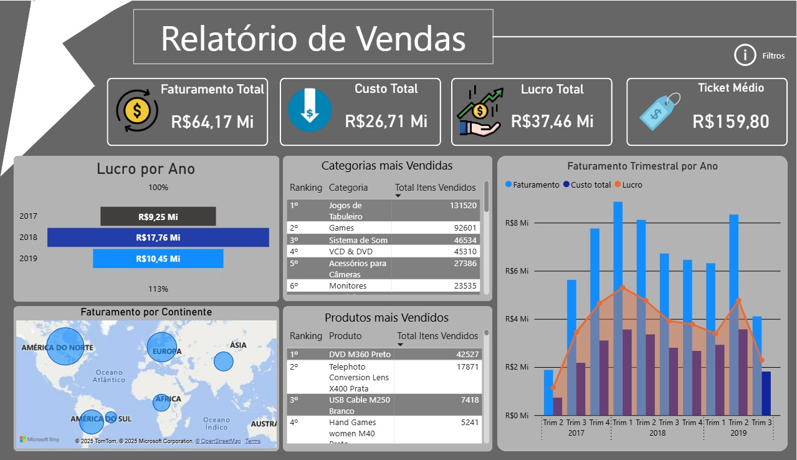
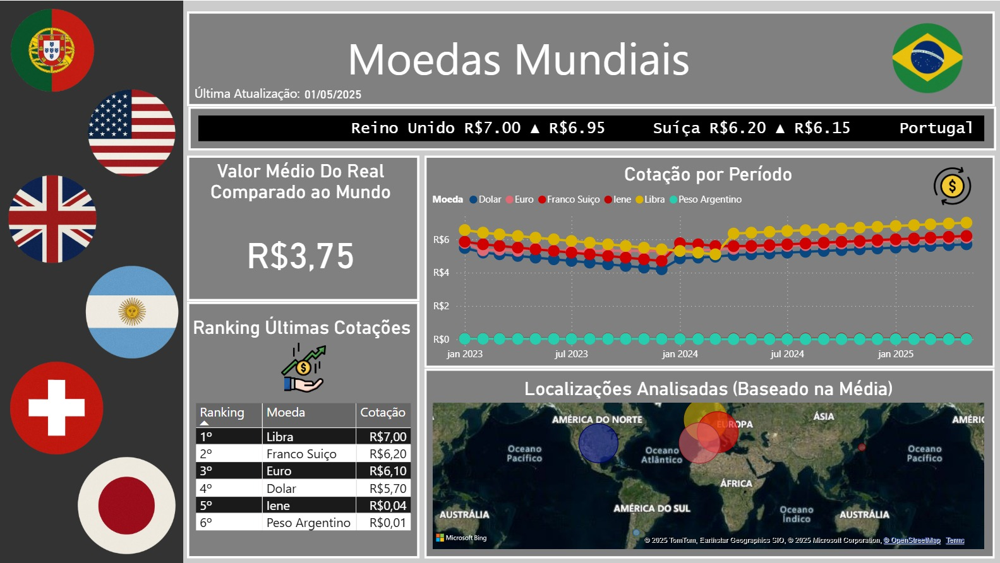
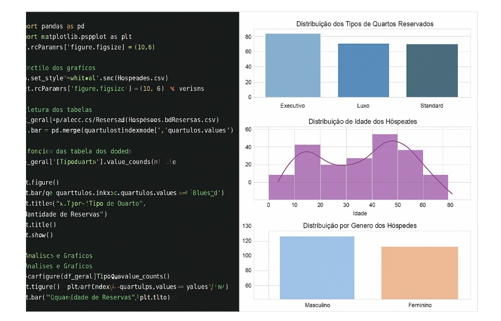
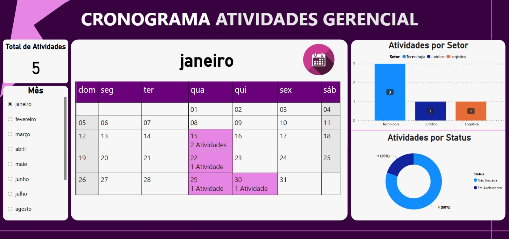

Salvador, BrasilCidadania italianaDisponível para relocação na Europa
Analista de dados que transforma processos manuais em sistemas escaláveis.
Portfólio de projetos em análise de dados, Business Intelligence e automação, com foco em transformar dados em decisões.
menos tempo para gerar relatórios de compliance, de 2 dias para 15 minutos (Neos)
menos tempo na geração de relatórios operacionais (Risoterm)
sistema estadual adotado por múltiplas unidades judiciais (TJBA)
Projetos
Projetos práticos de análise de dados, dashboards e automação. Explore os detalhes e resultados de cada iniciativa.

Dashboard de Vendas
Power BI, DAX
Dashboard sobre base fictícia de vendas, com análise por produto, categoria, marca, região e cliente. Medidas DAX para faturamento, lucro, custo total e indicadores comerciais.Relatório de Vendas x Cotação 2025
Power BI, Excel, DAX, Power Query
Dashboard comercial B2B que acompanha o caminho da cotação à nota fiscal, comparando valor cotado e faturamento, conversão por quantidade e valor, desempenho dos responsáveis, canais de contato e oportunidades em aberto ou perdidas. Projeto de portfólio com base fictícia.
Automação de Cotação de Moedas
Python, Selenium, Pandas, OpenPyXL, Excel, Power BI
Coleta diária automatizada das cotações de USD, EUR, GBP, CHF, JPY e ARS, com histórico consolidado em Excel e dashboard no Power BI. Pode ser agendada no Agendador de Tarefas do Windows ou no cron.
Análise de Dados no Setor Hoteleiro
Python, Pandas, Matplotlib, Seaborn
Análise exploratória de dados fictícios de hóspedes e reservas: tipos de quarto, faturamento, perfil dos hóspedes e tempo médio de estadia.
Dashboard de Calendário Corporativo
Power BI, DAX, Power Query
Acompanhamento de atividades por quantidade, status, responsável e prazo, com calendário interativo construído a partir de uma matriz personalizada. Dados fictícios.Ver dashboard online
Competências técnicas
Analytics e BI
Programação
Dados e automação
Negócios e comunicação
Formação, certificações e idiomas
Formação acadêmica
Ciência da Computação
Universidade Salvador. Em andamento.
Engenharia da Computação
UFBA. Previsão de conclusão em 2026.
Certificações
- Power BI, SENAI
- Machine Learning, USP / DATA ICMC
- Full Stack Development, Infinity School
- Selenium Automation Testing, Udemy
Idiomas
- Português: nativo
- Inglês: intermediário avançado (B2)
- Cidadania italiana: elegível para trabalhar em toda a União Europeia
Vamos conversar?
Aberto a oportunidades como Analista de Dados, inclusive com relocação na Europa.